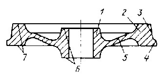
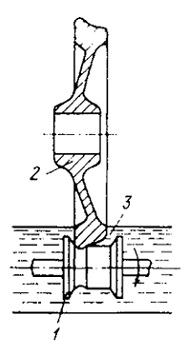

Условия эксплуатации колес грузовых и пассажирских вагонов различны, поскольку нагрузка на ось локомотива и грузовых вагонов может достигать более 25 т, что приводит к повышению контактных напряжений и интенсивному износу обода, его поверхности катания. При больших нагрузках и высоких скоростях возможен нагрев поверхности обода до температур выше критических точек и при последующем охлаждении образование мартенсита, что приводит к растрескиванию поверхностных слоев.
В процессе эксплуатации железнодорожных колес возникают значительные напряжения в месте контакта колеса с рельсом, которые бывают как нормальными (при давлении на ось), так и касательными (при скольжении колеса при разгоне или торможении). Кроме того, возникают динамические напряжения при качении колеса по стыкам. Удельное давление в месте стыка может достигать более 500 МПа.
Стали применяемые для производства цельнокатаных колес ГОСТ 10791-81
| Ст1 | 0,44–0,52 %С | 0,8–1,2 % Mn | 0,4–0,6 %Si | 0,08–0,15%V | не более 0,035 %Р |
| Ст2 | 0,55–0,65 %С | 0,5–0,9 %Mn | 0,2–0,42 %Si | – | не более 0,04 %Р |
Допускается отклонение по содержанию углерода до 0,02%, никеля хрома и меди – не более 0,25% каждого.
При выборе химического состава следует учесть, что повышение содержания углерода увеличивает износостойкость и контактную выносливость, но снижает термостойкость. Есть примеры использования для производства колес стали 65Ф, а также стали 45ГСФ для производства колес скоростных поездов. Традиционное производство железнодорожных колес – это выплавка в мартеновских печах с сифонной разливкой. Колеса изготавливают путем горячей штамповки и прокатки.
По своему составу колесная сталь является флокеночувствительной. Причем технология изготовления такова, что флокены сосредотачиваются в районе ступицы. Противофлокенная обработка заключается в изотермической выдержке при субкритических температурах с последующим замедленным охлаждением.
Для этого заготовки после изготовления переохлаждают до температур, обеспечивающих распад аустенита на ФКС. Растворимость водорода при этом значительно уменьшается, и он выделяется при 450–500 °С. Для ускорения выделения водорода проводят изотермическую выдержку при температурах чуть ниже А1 (650–670 °С).
Продолжительность выдержки составляет до 4,5 ч. Термообработка обычно проводится в туннельных печах длиной до 125 м.
Выбор режима обработки определяется условиями эксплуатации. Чаще всего закалку обода проводят путем спрейерного охлаждения одновременно всей поверхности обода. Более перспективен метод прерывистого охлаждения обода, однако он требует применения специального оборудования.
С целью снижения остаточных напряжений после закалки от температур 800–850 °С, колеса подвергают отпуску в интервале температур 400–600 °С. Оптимальной температурой отпуска является 480–520 °С с последующим охлаждением на воздухе.
Механические свойства должны соответствовать следующим нормам: – для Ст1: σв=90–100 МПа при относительном удлинении δ=12 % и поперечном сужении ψ более 21 %, твердость на глубине 30 мм должна составлять 248 НВ; – для Ст2: σв=93–113 МПа при δ=8 % и ψ = 14 %, твердость на глубине 30 мм должна быть более 255 НВ.
Причем разница в значениях твердости по ободу не должна превышать 20 НВ. Ударная вязкость должна быть не менее 0,3 МДж/м2 для Ст1 и 0,2 МДж/м2 для Ст2. Загрязнение неметаллическими включениями не должно превышать 4 балла, а оксидными строчечными включениями – не более 1 балла.